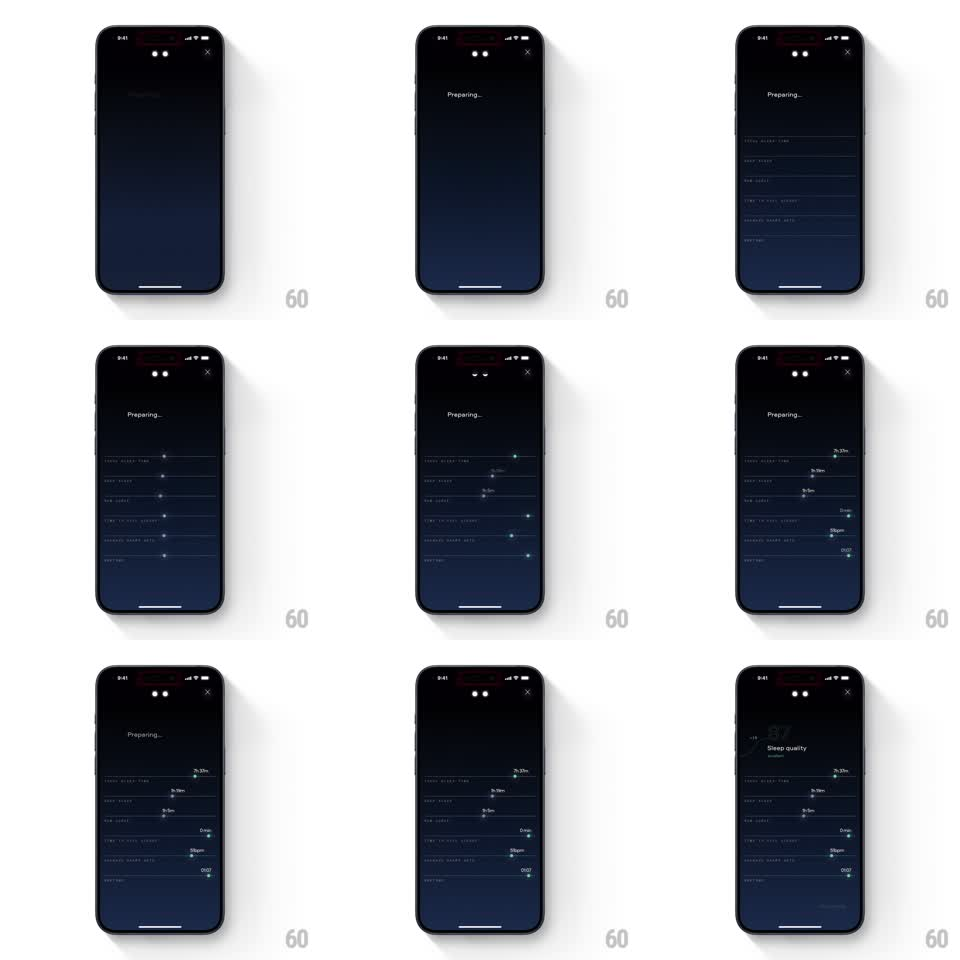

Media
Frame-by-frame

Rebuild this animation 1:1: Remy AI's sleep-quality breakdown - after a Preparing beat, metric rows stack in one by one, each progress bar sliding to its value before the sleep score fades in at top.

Rebuild this animation 1:1: Remy AI's sleep-quality breakdown - after a Preparing beat, metric rows stack in one by one, each progress bar sliding to its value before the sleep score fades in at top. ## Integration Integration: stack-agnostic spec - springs given as stiffness/damping, timed motions as duration + curve; map every value to your framework and animation library of choice. ## Scene A dark analysis sheet: "Preparing..." label, then rows of sleep metrics (Total Sleep Time, Deep Sleep, REM Sleep, Time to Fall Asleep, Awakenings, Bedtime) each with a thin progress bar, an end dot, and a value (7h 33m, 3h 19m, 5h 5m, 53min, 00:07). Finally the "87 Sleep quality" score with a delta chip at top. ## Motion spec Pattern: staggered bar fill with score reveal, ~3s. - "Preparing..." holds 600ms, then the row labels fade in together (300ms) with empty bar tracks. - Each bar fills left to right in sequence (top to bottom, 350ms per bar, ease-out, 120ms stagger), its end dot riding the fill's leading edge. - As each bar completes, its value label pops in at the dot (scale 0.8 to 1, 150ms). - After the last bar, the score fades up at the top (400ms): large "87" with "Sleep quality" and a small delta chip. - The sheet's grabber and close button are static throughout. ## Calibration - Bars fill strictly in order - the sequence is the storytelling. - Values appear only when their bar lands; no early numbers. ## Reduced motion Bars appear filled; score fades in. ## Don't miss - The bars are thin with rounded caps and a brighter end dot. - The score appears last and above everything - the conclusion after the evidence.